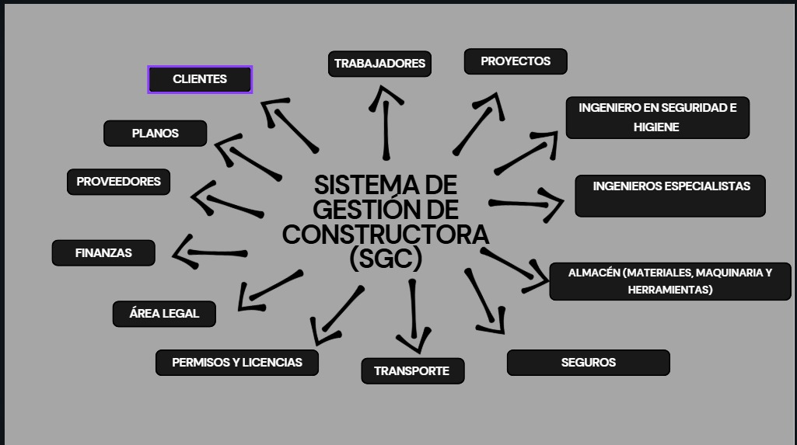

Descripción del Sistema
El Sistema de Gestión de Proyectos e Inventario (SGPI) es una propuesta diseñada para mejorar la administración en pequeñas constructoras. Su propósito principal es facilitar el control de materiales y el seguimiento de obras en curso, además de integrar áreas clave como clientes, contratos, proveedores y personal de obra.
Problemática del Proyecto
En la empresa MASON CONSTRUCTORA se identificó una problemática crítica relacionada con la dispersión de la información sobre sus principales recursos: trabajadores, maquinaria y materiales. Estos datos estaban almacenados en archivos físicos y hojas de cálculo, lo que ocasionaba duplicidad, pérdida de información y errores frecuentes. La ausencia de un sistema centralizado dificultaba la consulta ágil y confiable de la disponibilidad de recursos, generando demoras en los procesos administrativos y operativos. Esta situación afectaba directamente el seguimiento de actividades, la asignación de tareas y la toma de decisiones estratégicas. Además, el uso de registros manuales incrementaba el riesgo de errores humanos y demandaba un alto consumo de tiempo. Ante esta realidad, se planteó el desarrollo de un sistema digital centralizado, con el fin de integrar la gestión de recursos, mejorar la trazabilidad y optimizar la eficiencia operativa.
La ausencia de un sistema centralizado limita la capacidad de analizar la disponibilidad de recursos y de planificar de forma eficiente.
Objetivo del Proyecto
Desarrollar un sistema de información centralizado para optimizar los procesos operativos, mejorar la eficiencia en la gestión de recursos y facilitar la toma de decisiones en la empresa MASON CONSTRUCTORA, utilizando herramientas tecnológicas para el diseño de la interfaz de usuario y administración de la base de datos.
Subsistemas del Proyecto
El sistema se estructuró aplicando un enfoque modular, cuyo objetivo es organizar el sistema en módulos claramente definidos que puedan desarrollarse de manera independiente, pero que se integren de forma eficiente en la plataforma completa. Cada subsistema está diseñado para cumplir funciones específicas dentro de la constructora, asegurando un control óptimo de los recursos, procesos y proyectos en curso.
